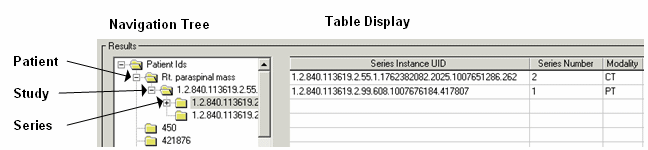

To query a remote machine, complete the following steps:
| 1. | Open the DICOM Network Services utility if needed by entering: |
DICOMEX_NET
| 2. | Click on the Query Retrieve SCU tab. |
| 3. | In the Query Node droplist, select the Application Entity name associated with the remote machine to be queried. If this droplist is blank, you need to define an Application Entity for the remote machine as described in Defining a Machine to Be Queried. |
| 4. | Select the query to be performed from the droplist: |
| • | All patients — the default patient-level query |
| • | Use current query — the last configured custom query. If you have not built a custom query, the default is a patient-level query. |
Note: See Query the Remote Node if you want to change the default query.
| 5. | Click the Query button. All patient files located on the remote machine (up to the number of Max Query Responses defined on the Configuration tab) that match the query parameters will be returned. |
| 6. | View the query results in the Results section, described in Query Results. Status information appears in the Status window. |
Note: If you have a query error, you can use the Echo SCU functionality to test the connection. See Returning Connection Status with Echo.
To stop a query, click the Cancel button. This sends a cancel request to the remote machine and halts the return of file information.
The results of any query are shown in the Results section of the Query Retrieve SCU tab. This area is divided into a navigation tree in the left pane and a table display in the right pane. A subset of the Results area is shown in the following figure.

Results Area of the Query Retrieve SCU Tab
The Navigation Tree area displays the patient-study-series-image hierarchy. The Table Display area displays selected patient, study, series or image information.
When you click on an item in the Navigation Tree, a sub-query returns child items. For example, clicking on a series will perform a sub-query to return all images associated with that series, up to the Maximum Query Responses value. Click the + symbol next to any previously selected item (or double-click the item) to see sub-items.
Note: For optimum performance, the initial query does not populate the Navigation Tree with all child items. Because these items are returned on request, there may be a slight delay in the display of sub-query results.
Note: Some remote machines do not return a patient ID with query results. When you perform a query by clicking the Query button, all results returned without a patient ID appear under “Unknown Patient ID” in the Navigation Tree window.